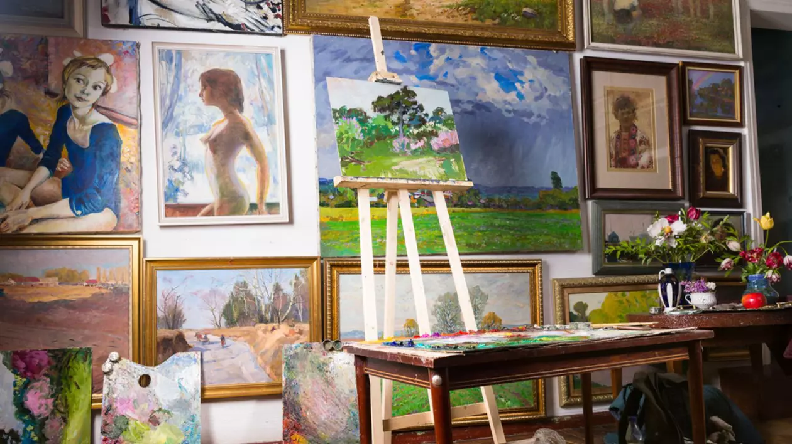

Împărtășește-ți creativitatea!
Arta este o modalitate de exprimare a ideilor și emoțiilor prin diferite forme: pictură, muzică, dans, teatru etc. În această pagină, vei învăța despre marile mișcări artistice și artiști care au marcat istoria artei. Vei descoperi cum arta influențează cultura și cum te poate ajuta să îți exprimi creativitatea. Fiecare formă de artă are o putere de a transforma și de a inspira, iar resursele din această secțiune îți vor oferi instrumentele pentru a explora și a învăța mai multe despre acest domeniu.
